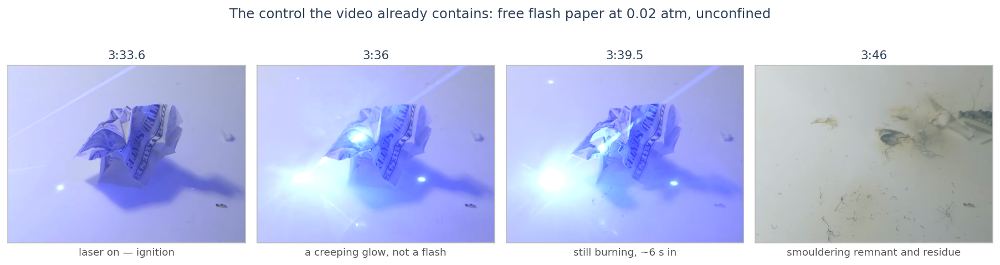

Fun With Science / Globe Deconstruction / Rockets in Vacuum / The Action Lab Footage
The Action Lab Footage, Frame by Frame
The book asks why the syringe takes so long to move. This is what the frames measure.
On p. 20, Globe Deconstruction? reproduces a still from The Action Lab's Rocket Launch In a Giant Vacuum Chamber under two questions: “Gas not being able to move a syringe in a vacuum chamber?” and “Why the long delay in movement?” In correspondence the author has put the underlying idea more sharply than the book does: the push originates when the exhaust contacts the wall and is carried back through the gas, rather than arising at the nozzle. This page measures the footage against that claim — where the gas is at every moment, when the syringe moves, and what its own exhaust plume is doing. The ordering the book expects is in the frames, and it is conceded here in full: the gas reaches the wall about two seconds of playback before the syringe moves. What the frames then rule out is the mechanism. The physics argument lives on the main answer to Claim #2, Rockets Don't Push Against Air.
Observation concededInference not supported
What the frames show
The exhaust crosses the chamber and fans out against the wall at about 332.8 s of video time (5:33). The syringe's first detectable motion comes at about 334.6–334.8 s — contact first, motion second, by roughly two seconds of playback. That is exactly the ordering the book's argument expects. It is also an ordering no account on offer forbids — a push too small to see looks identical, on video, to a push that has not yet arrived — so the ordering by itself separates nothing. The mechanism can.
For the wall to be the engine, the contact has to cause the motion that follows it — and the gap between the two is 25 to 220 times too slow for a pressure wave, while the smoke that could physically carry the delay moves at metres per second and carries next to no momentum. Meanwhile the one causal signature in the clip points the other way: when the propellant flares at 335.85 s, the syringe's acceleration answers within one or two frames — zero lag to events at the nozzle, two seconds of nothing after the event at the wall.
1 · What the video shows, in order
The source is Rocket Launch In a Giant Vacuum Chamber, published by The Action Lab on 17 November 2023, 6:43 long, in 4K. It is not Levi Miller's video and not Alex Kampf's; it is a third party's, and the book is arguing against it — generously, as it happens. p. 20 credits it directly: “Without the research deconstructing this experiment, this book may never have come into existence. Thank you, Action Labs!”
The experiment runs from about 4:14 to 5:38. Flash paper is sealed inside a medical syringe with the plunger glued, so gas can only escape through the tip. The syringe hangs on threads inside a large chamber pumped down to about 0.02 atmospheres (19 mbar absolute — the gauge reads 827 mbar of vacuum against an 846 mbar ambient), and a laser sheet lights the exhaust. There are two runs: the first, at about 5:11, accelerates hard enough to destroy itself against the chamber wall; the second, from about 5:23, is the clean one. The clean launch is shown twice — once under the “<0.02 atm” caption and again uncaptioned from 5:31 — and all timestamps below refer to the second showing, video time 331.65–336.05 s, measured at 60 fps playback. (The clip carries about 30 distinct frames per second — every frame appears twice — and the capture rate is never stated; both facts matter below.)
Tracked in luminance, background-subtracted against a frame from the same shot, the sequence is:
| video time (playback) | event |
|---|---|
| 331.65 | clip opens with venting already under way — a thin jet, and smoke already drifting |
| ~332.8 | exhaust reaches the wall and spreads radially against it (visible in the frames at 5:33) |
| ~334.6–334.8 | first detectable syringe motion (subtracting the pendulum sway puts onset at the early end, ~334.6) |
| 335.85 | main burn — plume brightness spikes to 2.8× its plateau, then collapses below it within two frames |
| 335.85–335.88 | acceleration peaks, within 1–2 frames of the flare; peak speed follows at ~335.90 |
Past about 335.85 the flash floods the frame and pulls the centroid, so magnitudes from that window are not used anywhere below. One thing is read from it, and it survives the contamination: the timing of the speed rise relative to the flare, which needs only the sign of a frame-to-frame change, not its size.
![Three stacked panels sharing a time axis from 331.65 to 336.05 seconds. Top: a space-time image of the chamber. A smoke front leaves the nozzle region and climbs as a shallow diagonal streak, reaching the chamber wall line at about 332.8 seconds, while the syringe's trace sits motionless. A vertical orange arrow marks how a pressure wave at sound speed would appear: an exactly vertical line. Middle: syringe speed, flat at zero until about 334.6 to 334.8, then rising smoothly to a peak near 770 pixels per second just after the main burn at 335.85, with an inset zooming on the onset. Bottom: plume brightness at the nozzle, drifting slowly for four seconds, then a 2.8 times spike at 335.85 followed by a collapse below the plateau.](assets/sequence-xt.png)
So the frames give the book its observation, at full strength: gas at the wall, then a two-second wait, then motion. A note on method, because it is easy to get this measurement wrong: the material that actually crosses the chamber is grey-white smoke, not the blue of the laser-lit jet — a blue-channel measure sees only the sheet and misses the crossing entirely, which is why every trace on this page is luminance-based.
It has to argue from the mechanism, because the coarse ordering is compatible with every account on offer. Under reaction thrust, the push during gentle venting is real but far too small to move anything visibly — a push too small to see and a push not yet arrived look identical on video — while under the book's reading, motion simply waits for the gas. (In a small chamber the ordering is outright forced: exhaust leaves a nozzle orders of magnitude faster than the vehicle it pushes, so a coherent jet crosses any tube while the vehicle's displacement is still a fraction of a pixel — the companion page runs that arithmetic for the book's own rig. This chamber is large enough that the crossing is finished by slow smoke instead, which is what makes its timing readable at all.) The question the footage can answer is what happens in the two seconds in between, and whether the contact causes what follows it.
2 · Why the burn looks like that
Before the timing argument, it is worth understanding the burn itself — because the video contains a control experiment that answers most of this page's questions on its own, and neither the video nor the book uses it.
At 3:34, before any syringe is involved, the presenter ignites a piece of free flash paper lying on the chamber floor, at the same 0.02 atm. Three things happen that are worth staring at:
- — It burns for about eight seconds. Flash paper in open air goes up in well under half a second — that is its entire stage value. A factor of ~15 slowdown at 1/50th of an atmosphere is what the standard pressure-dependence of burning rate predicts: Vieille's law, r = aPⁿ with n ≈ 0.6–0.8 for nitrocellulose, predicts a factor of 11–24 at 19 mbar.
- — It creeps. The burn spreads as a slow glowing front across the paper — no flash, no terminal event, no peak. It just eats its way along and goes out.
- — It leaves residue. The video's own introduction (0:56) notes that flash paper burns with “no residue left over” — and the frames at 3:46 show charred remnants on the chamber floor. Near its low-pressure limit the combustion is incomplete. The propellant is genuinely struggling at this pressure.

Now look at the confined burn, in the bottom panel of the figure in §1. Inside the syringe the same propellant does something completely different: it vents gently for four seconds with only a slow drift in brightness, then spikes to 2.8× the venting-phase mean within two frames, then collapses below the plateau two frames later. Quiet — spike — gone.
That shape is what a confined burn does, and it follows from the same pressure law that slowed the free burn down. Because n < 1, a sealed chamber is stable at a given burning area — there is no runaway from pressure alone. The runaway comes from area. Equilibrium chamber pressure scales as
where Ab is the burning surface area. Doubling the area that is alight raises the equilibrium pressure roughly tenfold. Paper lit at a point spreads its burning front; the front's area grows; pressure climbs steeply; higher pressure drives the front faster. The predicted signature is a long quiet phase, a terminal climb, and a hard collapse below the starting level at burnout — and rather than assert that, the figure below graphs it against the measured trace.
![A single chart of plume brightness against playback time. The measured trace drifts slowly around a plateau for four seconds, spikes sharply at 4.2 seconds, and collapses below its starting level. Two green model curves are overlaid: a dashed one with smooth burning only, which tracks the plateau and tops out near 1.7 times, and a solid one in which burning area doubles for the final tenth of a second against a finite vent, which reproduces the needle's rise, height and width and collapses with the measured trace below the starting level.](assets/runaway-model.png)
3 · Why the delay cannot be the wall
Now the claim itself. For the wall to be the engine, the contact at ~332.8 s has to cause the motion at ~334.6 s — something has to carry the push from the wall back to the syringe across that two-second gap of playback. Physically there are only two candidates: the gas carries it as a pressure wave, or the gas carries it as returning material. Both fail, in opposite directions.
Too fast: a pressure wave
The book's own mechanism (p. 82) is compression — the substrate “compresses the molecular flow” and the compressed flow pushes the vehicle. Compression travels as a pressure wave, and pressure waves move at the speed of sound: about 340 m/s in air-like gas, and — the important part — near-independent of density (c = √(γRT/M): thinner gas means fewer collisions but proportionally longer free paths between them). Across the roughly 0.36 m from nozzle to wall, a wave makes the trip in about 1.06 ms, and the round trip in ~2 ms. (The observed gap runs from contact at the wall to motion, so the leg that matters — wall back to syringe — is the one-way figure.) Even with the image scale's ±30% uncertainty, that figure lives between 0.7 and 1.4 ms.
The observed gap is 1.9 ± 0.3 s of playback — the contact time comes from a luminance threshold on diffuse smoke and the onset from a sub-pixel centroid, and both carry a couple of tenths of a second, so the uncertainty is stated rather than hidden. The capture rate is never stated either, but across the plausible range of high-speed capture (240–2,000 fps, i.e. 8× to 67× slow motion at 30 distinct frames per second) the central figure is 28 to 238 ms of real time — a factor of 25 to 220 too slow for a compression wave. And the conclusion does not live at the edge of those ranges: take every uncertainty against it at once — the shortest defensible gap (1.6 s), the fastest plausible camera, the longest chamber (0.47 m) — and the wave is still some seventeen times too fast. And the delay cannot be rescued by adjusting the chamber: doubling its size adds about one more millisecond. For a carrier to take 28–238 ms to cross 0.36 m it would have to travel at 1.5–13 m/s — and the footage shows exactly what moves at that speed: the drifting smoke. Which brings us to the second candidate.
Too weak: returning material
Could the smoke itself — actual gas molecules bouncing off the wall and coming back — deliver the push at 334.6? It moves at the right speed; the x–t diagram in §1 shows it being transported across the chamber at metres per second, the shallow diagonal that a sound-speed signal would render vertical. But a material return fails on what it could deliver, three times over.
- — There is nothing for it to copy. Whatever rebounds off the wall is the nozzle's own output, delayed by a round trip: mathematically, the emission history convolved with a return-time kernel. Convolution smears — it cannot create a peak sharper than its input, and it cannot create a feature where the input was flat. The emission history has nothing sharp in it: the plume trace drifts slowly from about 2,000 to 3,400 over four seconds, with no sharp feature anywhere until the flare itself. So there is no candidate lag — no round-trip time of any length — at which a delayed copy of the emission could supply the abrupt onset of motion or the 2.8× spike; a rebound of a featureless vent is a featureless push.
- — And it is far too sparse. A real surface at these energies re-emits diffusely rather than mirror-reflecting, and the fraction of that re-emission a syringe-sized body intercepts at these distances is 0.05% to 3% of the outgoing momentum. The claim needs essentially all of it.
- — And it is aimed wrong. That budget is already the generous case — re-emission from the point of the wall on the jet axis, sent straight back. The footage shows the gas doing something less convenient: it fans out radially and meets a curved chamber wall over a wide footprint, almost everywhere at oblique incidence. A rebound leaves at the angle it arrives, so even the directed part of any return sprays off around the chamber rather than travelling back down the jet line to a syringe-sized target — there is no flat plane squarely behind the exhaust to bank the shot off. And an oblique push would announce itself: a return arriving off-axis delivers a sideways component along with the axial one, swinging the syringe across the jet line as it accelerates. The track shows nothing of the sort — over the clean acceleration window the syringe covers 41 px along the jet axis against about 3 px of lateral wander, and that wander is the same size as the pendulum sway it shows before motion begins. It departs straight back along its own exhaust line, which is where the thrust says it should go and where an angled rebound says it should not.
Nothing physical lives in the gap the book needs: the wave crosses in a millisecond against a delay of tens to hundreds of milliseconds, and the material that is slow enough carries a fraction of a percent of the momentum, aimed mostly elsewhere — with no feature in it to copy.
Against that, the case for the nozzle is one sentence long, and it is the strongest measurement in the clip: when the propellant flares at 335.85, the acceleration answers within one or two frames. Zero measurable lag to an event at the source — and throughout the launch, acceleration tracks the plume, not the wall. Thrust behaves as if it is generated where the gas leaves, because it is.
4 · The rigid-body version, and Kampf's Law
In correspondence the author has offered a sharper version of the claim than either the book's wave or the rebound: treat the exhaust column as effectively rigid, so that once gas spans the gap, pushing on it is like pushing on a rod — force at one end appears at the other with no lag. Credit where due: this version survives §3. A rigid link delivers force instantly, exactly as reaction-at-the-nozzle does, so no timing measurement in this footage can separate the two. Motion beginning after contact is consistent with both. We concede that outright. (A sharper timing point is available against it — a column that pushes from the moment it spans should have begun moving the syringe at contact, ~332.8, not two seconds later — but we do not lean on it, because visible onset also depends on how big the push is, the same caveat that shelters every account in §1.)
But the book has already ruled on it. Kampf's Law (p. 82) exists precisely to mark gas as categorically unlike dense matter: “Dense matter (liquids and solids) can generate thrust for a vehicle from reaction forces, while gas propulsion requires an external substrate to compress the molecular flow.” p. 79 sets up the same distinction — the ice-skater-and-bowling-ball picture of the third law is said to fail because it “assumes solid objects and gases work the same way.” The law's entire content is that they do not: a gas, unlike a solid, is held not to transmit reaction force by itself.
A rigid gas column, however, is a solid under another name — rigidity is the defining mechanical property the law denies to gas. So the fork closes on its own:
- a If the exhaust column is not rigid — if gas really is categorically unlike a solid, as the law insists — then the rigid-body version is off the table, and the claim falls back to transmission through the gas, which §3 closed: too fast as a wave, too weak as material.
- b If the exhaust column is effectively rigid, it is behaving as dense matter — and dense matter, by the book's own opening concession, can generate thrust from reaction forces. The syringe recoils from its own exhaust, which is the mainstream account wearing different clothes.
There is also a physical check on the middle reading — a column rigid in transmission while remaining gas in origin, a lever rather than a rocket. A link that transmits force is in sustained compression, and its ends move together. The footage shows neither: through the acceleration the syringe pulls away at hundreds of pixels per second while the material behind it keeps to its own slow drift, unmoved by the departure, and the smoke along the supposed strut wanders sideways as if nothing were loading it. Whatever pushes the syringe is not braced against the wall.
Either branch ends with the rocket moving for the mainstream reason. And it should be said plainly: writing the law down as a law is what makes this checkable at all. Most arguments in this genre never commit to anything falsifiable; Kampf's Law does, and the author is entitled to take the stronger branch of the fork — it is just that the stronger branch is Newton's.
5 · What this footage cannot settle, and the test that would
Honesty about limits, in order of how much they matter:
- — This footage can refute transmission-through-the-gas; it cannot separate reaction-at-the-nozzle from the rigid-column version by measurement. Both predict zero lag. The separation in §4 comes from the book's own structure, not from the frames — and the physical measurement that would separate them is the book's own p. 80 design, run with the right instrument (below).
- — Plume brightness is a proxy for mass flow, not a measurement of it. It scales with the amount of scattering material near the nozzle, which is all the arguments here need — but nothing on this page converts brightness to grams.
- — The syringe is a pendulum. Its swing fits a period of 1.90 s at about 1 px of amplitude, comparable to the early motion itself. Subtracting the fitted sway favours the early end of the §1 onset band (~334.6) — motion begins during gentle venting — and either end of the band leaves a delay of tens of milliseconds of real time, no closer to a millisecond-scale wave.
- — The acceleration trace is too noisy to fit a thrust curve. Differentiating pixel positions twice leaves ~±2,000 px/s² of noise in the venting phase; the page uses acceleration only for its timing, never its magnitude.
- — The capture rate is never stated and the image scale is good to about ±30%. That is why real-time figures appear as ranges (28–238 ms) and why the wave-speed argument is built to survive the whole range at once. The slow-motion clips also begin after venting has started; the normal-speed footage around 5:00–5:04 shows the syringe hanging quietly beforehand, but at no useful frame rate.
And the test that would settle the remainder is cheap. The book's p. 80 design — fire the same rocket with the wall at two distances — asks the right question; it just cannot be read with a camera, because the onset differences at stake sit inside a single frame at any consumer rate. Put a load cell between the vehicle and its mount, a pressure plate on the wall, and both on a common clock. Reaction-at-the-nozzle predicts thrust onset independent of wall distance; any wall-mediated mechanism predicts onset scaling with it. Two traces, one afternoon, and the question is over. The Self-Test Protocol states this in hand-off form, designed to be run by the book's authors rather than by us.
On scope, finally: this page examines a video the book cites, not Miller and Kampf's own chamber experiment, which remains unpublished. Nothing here settles what their rig will show — though §2's pressure-runaway analysis makes one friendly prediction for it: confine this propellant in a small volume, and the peak will find you. Miller made an error of inference, not of honesty. The frames, the numbers, and everything still open are above. If any of it is wrong, we would like to know which part.
Sources & further reading
- The Action Lab, Rocket Launch In a Giant Vacuum Chamber, YouTube, 17 November 2023 — the primary source. Flash-paper introduction at 0:56; free-burn control at 3:34–3:46; chamber-pressure demonstration at 3:46–4:14; rocket construction 4:14–4:44; launch 1 at 4:44–5:13; launch 2 at 5:13–5:38 (shown captioned from 5:23 and again from 5:31); the maker's own momentum explanation at 5:38–6:06.
- Levi Miller, Globe Deconstruction?, prerelease draft, 2026 — p. 20 (the still, the credit to The Action Lab, and the two questions), p. 79 (“solid objects and gases work the same way” named as the third law's assumed premise), p. 80 (the two-wall-distance design and the conditional delayed-reaction discriminator), p. 82 (Kampf's Law and the “compress the molecular flow” mechanism), p. 183 (the claim that the experiment is conclusive).
- Measurements underlying this page: all traces luminance-based, background-subtracted against a frame from the same shot (blue-channel measures see only the laser sheet and miss the grey smoke); syringe centroid and plume brightness over video time 331.65–336.05 s at 60 fps playback (~30 distinct frames/s), 1080p; space–time diagram from per-column luminance along the jet axis; smoke-front speed ≈600 px/s of playback by linear fit over 332.0–333.0 s; pendulum period 1.90 s fitted to pre-onset sway. A glare-driven artefact at 335.80 — any threshold detector “detecting” wall arrival at the flash — was excluded using a control band 300 px off the jet axis, which shows the same spurious signature.
- Sutton & Biblarz, Rocket Propulsion Elements — ch. 2–3 for the thrust equation and why ṁ·ve is set at the nozzle; ch. 12 for solid-propellant burning rate, Vieille's law r = aPⁿ, and the dependence of chamber pressure on burning area.
- Goodman & Wachman, Dynamics of Gas–Surface Scattering — thermal accommodation on engineering surfaces, behind the diffuse re-emission step in §3's momentum budget.
- Companion pages: Rockets Don't Push Against Air (the physics of Claim #2, including the forced-ordering arithmetic and the load-cell test in detail), Thrust, Measured in Flight (the same question answered with flight data), and the Self-Test Protocol.